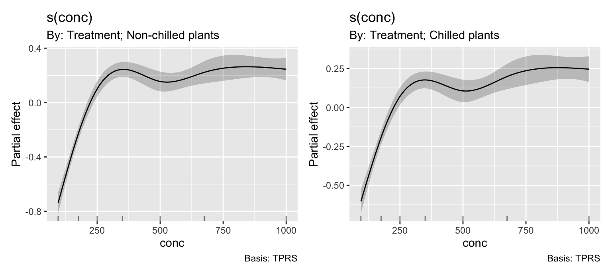
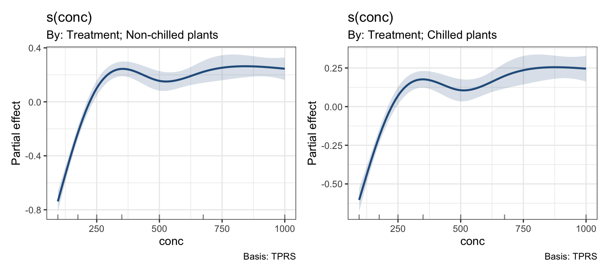
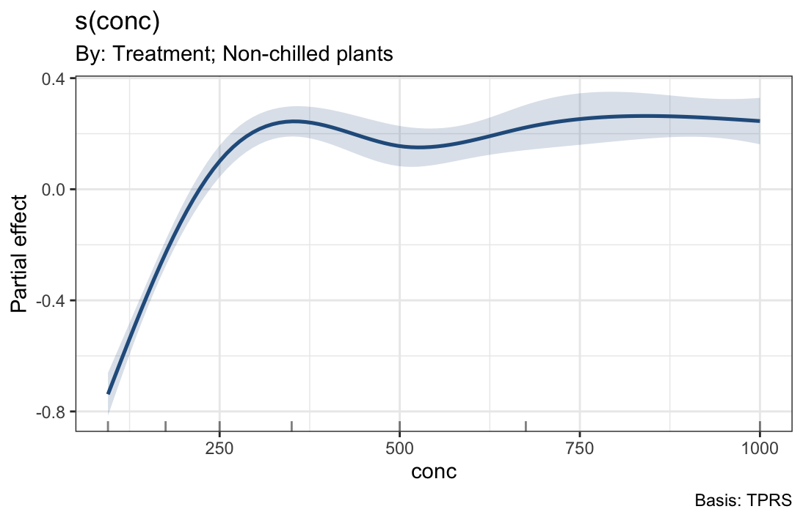

library("mgcv")
library("gratia")
library("ggplot2")
library("dplyr")
plant <- as_tibble(datasets::CO2) |>
mutate(
Plant = factor(Plant, ordered = FALSE),
Treatment = factor(
Treatment,
levels = c("nonchilled", "chilled"),
labels = c("Non-chilled plants", "Chilled plants")
)
)
m <- gam(
uptake ~ Type * Treatment + s(conc, by = Treatment, k = 5) +
s(Plant, bs = "re"),
data = plant, family = Gamma(link = "log"), method = "REML"
)Customising gratia plots with ggplot2 themes
Style smooths, intervals, and grouped curves with gratia 0.12.1
R
Use ggplot2 themes to style smooths and their intervals, apply the same look across panels, and migrate older gratia plotting code.
With gratia 0.12.1, you can change the colour of a smooth or the opacity of its interval after calling draw() using the new theme system. These settings now live in ggplot2 themes, alongside familiar options for backgrounds and text. That makes it easier to use the same style across several figures or give an existing figure a different look.
I’ll use two curves from a plant experiment to show how to style a set of panels, reuse the style, and choose colours for grouped curves.
Start with a fitted model
The CO2 data that come with R record carbon dioxide uptake by grass plants from Quebec and Mississippi. Half the plants from each origin were chilled, and uptake was measured at the same set of concentrations for each plant (Potvin et al., 1990).
For this post I’ll reuse the model from gratia’s prediction comparisons article. It fits a separate concentration smooth for each treatment and includes a plant random intercept for the repeated measurements.
To keep the plots simple, I’ll focus only on the two estimated smooth functions, using draw()’s select argument with partial_match = TRUE to pick out the two concentration smooths by their shared label, s(conc). The curves show each smooth’s contribution on the log scale. The ggplot object is saved so that it can be reused.
p <- draw(m, select = "s(conc)", partial_match = TRUE, ncol = 2)
p
Style the curve and its interval
The theme element geom.gratia.smooth controls the fitted line. geom.gratia.interval supplies the ribbon fill, while gratia.alpha.interval controls how transparent the fill is. I’ll use the same blue for the line and ribbon, with a lower opacity for the ribbon.
uptake_style <- theme(
geom.gratia.smooth = element_geom(colour = "#275D8C", linewidth = 0.9),
geom.gratia.interval = element_geom(fill = "#275D8C"),
gratia.alpha.interval = 0.18
)
p & theme_bw() & uptake_style
draw() returns a patchwork, so patchwork’s & is used to send both themes to every panel. With a single ggplot, use +. When used with a combined figure, + would apply the theme to the last panel only.
If you’re updating an existing script, move smooth_col from the draw() call into geom.gratia.smooth, ci_col into geom.gratia.interval, and ci_alpha into gratia.alpha.interval. The old arguments are deprecated. While they still work, an explicitly supplied colour or opacity takes precedence over the corresponding theme setting, so remove it from the call when you migrate.
Reuse the theme for new plots
Use gratia_theme_set() to style a series of new plots. Each call invisibly returns the gratia theme that was active immediately before the call, or NULL if no gratia theme was set. I save that value in previous_style so I can restore it after assembling the panels.
I put theme_bw() first because it sets a complete theme. Adding uptake_style after it gives me the white background with the blue line and ribbon.
previous_style <- gratia_theme_set(theme_bw() + uptake_style)
panels <- assemble(m, select = "s(conc)", partial_match = TRUE)
gratia_theme_set(previous_style)
panels[[1]]
assemble() attaches the combined theme to each panel as it creates it. Restoring previous_style sets the theme for future gratia plots. The saved panel still has its white background and blue styling. Use gratia_theme_get() to see which gratia theme is active.
Future directions
This is the first outing for the theming system, and there are some features of ggplot2’s themes that aren’t part of the new gratia system, so clashes may occur. If you have comments on the new theme system or suggestions for additions to it, let me know in the comments below.
References
Potvin, C., Lechowicz, M. J., and Tardif, S. (1990). The statistical analysis of ecophysiological response curves obtained from experiments involving repeated measures. Ecology 71, 1389–1400. doi:10.2307/1938276.
Social